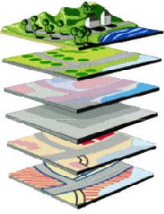

Siguiente: Representación de datos en
Subir: Aspectos previos al desarrollo
Anterior: Elección del lenguaje de
Índice General
Introducción a GIS
La geografía no es solamente un área de conocimiento académico, es
una disciplina de implicaciones multimillonarias tanto para los
gobiernos como para el mundo de los negocios, ya que sirve como
marco para el manejo de diversos tipos de conocimiento. GIS es
justamente una tecnología que se encarga del tratamiento de
información desde una perspectiva geográfica. Más específicamente,
un Sistema de Información Geográfica o GIS es un sistema
computacional que permite y facilita la creación y manejo de
información geo-referenciada. Esto implica la recolección, análisis,
integración, almacenamiento, gestión y representación de datos
espaciales y sus atributos asociados.
El concepto principal detrás de GIS es la asociación de objetos
gráficos con una base de datos, por lo que se les suele llamar a los
mismos smart maps (mapas inteligentes). La base de datos se
encuentra asociada por un identificador común a los objetos gráficos
de un mapa digital; de esta forma señalando un objeto se conocen sus
atributos e, inversamente, preguntando por un registro de la base de
datos se puede saber su localización en la cartografía.
GIS puede verse básicamente de tres maneras distintas:
- Como una base de datos de información geográfica
(geodatabase).
- Como un conjunto de mapas en los cuales se visualizan determinadas características y sus
relaciones en la superficie terrestre (geovisualization).
- Como una herramienta que puede tomar un conjunto de
datos geográficos para analizarlos y transformarlos en un nuevo
conjunto de datos (geoprocessing).
Toda aplicación GIS utiliza cada una de estas visiones en mayor o
menor medida.
Otro concepto muy importante es el concepto de capas
(layers), que se ilustra en la figura 6.1. El
sistema separa la información en diferentes capas temáticas y las
almacena independientemente, permitiendo trabajar con ellas de
manera rápida y sencilla. Esta división conceptual facilita el
entendimiento de cómo se interrelaciona la información, y permite la
aplicación de diferentes combinaciones.
Figura 6.1:
El concepto de capas en GIS
|

|
Subsecciones
Siguiente: Representación de datos en
Subir: Aspectos previos al desarrollo
Anterior: Elección del lenguaje de
Índice General
SAPO